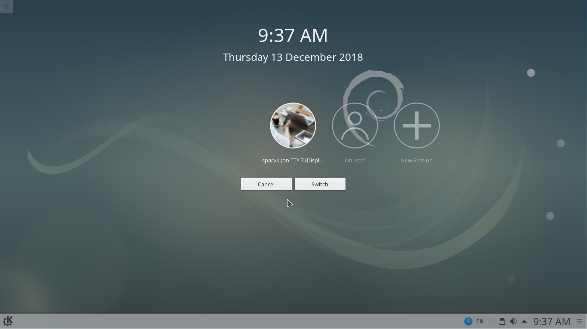

A sparvk portable operating system distribution comes with a very nifty feature that allows you to use a single installation with multiple users. Such that:-
-
Each user will have their own directory that keeps the work data separate from all other users. This is a logical separation. Only the administrator has the access to view the data for any user.
-
New programs can only be installed by the admin. A normal user can't install programs. It is also possible to limit the access of programs to a particular user although by default most programs installed by admin can also be used by a normal user (unless of course the program requires admin access to run)
- Each user can have multiple sessions. A session is a snapshot of a running system in time. For example:- in one session a user may be working on a spreadsheet program. Later he may switch to a different session where he works on Inkscape for some design related task. Both sessions will be completely separate from each other with their own set of running programs.
 In other words a sparvk enabled workstation can be shared amongst your entire staff. If you are a small business and have little resources to buy machines this is an ideal scenario for you.
Even if you're a big business and you want to limit the number of machines your staff has access to perhaps due to some sensitive nature of the data you can simply create multiple accounts on a single machine and reduce the number of components you have to manage.

Sparvk pod constantly logs all the user activity on a machine. As an administrator you can monitor which user did what. Although it is possible to view the logs on a command line to make things easier sparvk comes with Ksystemlog application that allows you to view application logs from a command line interface.

How to create new users?
- From the start menu navigate to application>settings>system.
- Then click on the Account Details under the personalization section.
- In the screen that pops up click on User Manager.
Please note that you need administrative privileges to create a new user.
How to create new sessions?
- From tthe start menu navigate to leave > switch user
- In the screen that pops up either click the + icon to start a new session with the same user. Or click on the switch user button to start a new session as a different user.
And that's all. Depending upon your choice in the previous step you should either be logged in as a new user or in a new session with the same user.
How to end your session?
Ending your session is very straightforward.
- Launch the sparvk application menu
- Navigate to the leave tab
- Click on the logout button.
And that's it. You've just ended your session.
Sessions and user accounts increase the value you get out of a sparvk enabled machine. It reduces the burden of having to manage multiple machines. Adding more users and switching to new sessions is highly intuitive. One click is all you need.